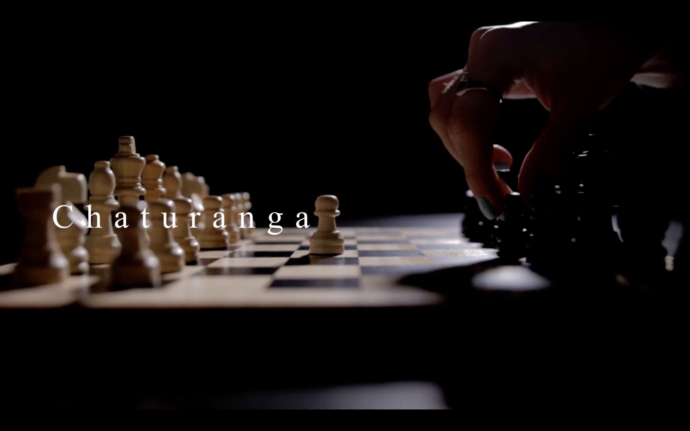
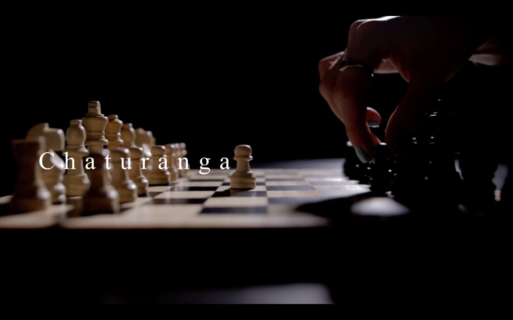
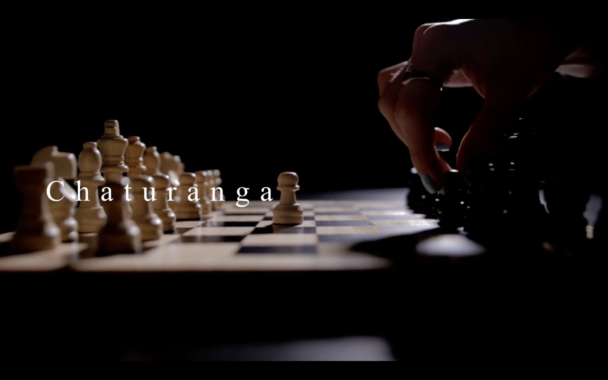
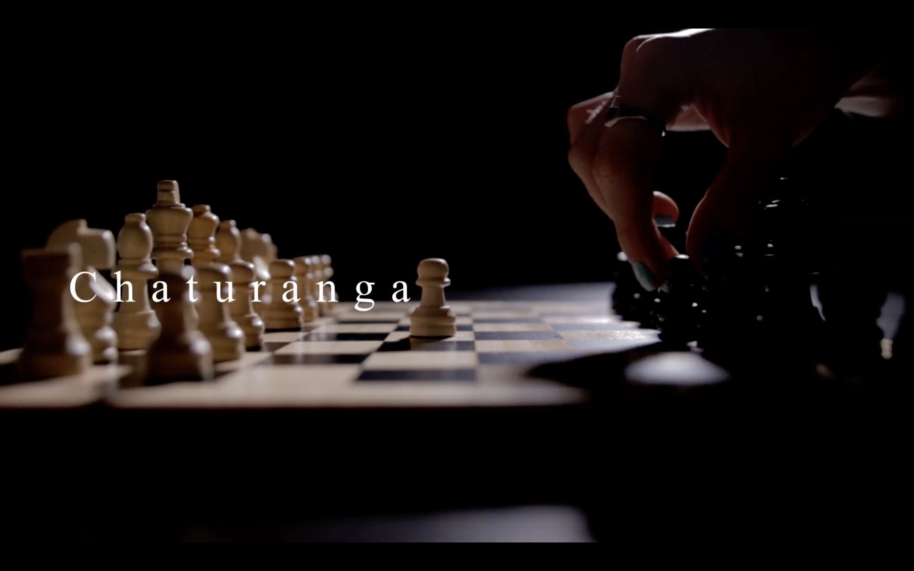

VIDEO
 



Eksamensproduktion i mediefag B. Kortfilmen er produceret af Albert Ross
Johannessen, Celine van Leeuwen, Emilie Saxtorph Wig Lundqvist, Maya Foldbjerg
El-Naaman og Jennifer Marie Thomsen. Skrevet af Emilie Saxtorph Wig Lundqvist og
Jennifer Marie Thomsen. Fotograferet af Albert Ross Johannessen. Redigeret af Albert
Ross Johannessen og Jennifer Marie Thomsen.
Kortfilm 2020, 06:02 min. Redigeret i DaVinci Resolve 16
Workshop i sammenarbejde med Filmværket og Station Next. Instrueret af Sophus Tougaard Petersen.
Fotograf/tonemestre Anna Lauritsen og Jennifer Marie Thomsen. Postproduktion af Anna Lauritsen,
Frederikke Mejdahl, Sophus Tougaard Petersen,
Zara Løvebo og Jennifer Marie Thomsen.
Kortfilm 2021, 05,24 min. Redigeret i Premiere Pro.